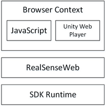

Programming Guide: Browser Support |
Top Previous Next |
|
The SDK provides browser support for JavaScript in an HTML page and for C# in the Unity web player. The support is based on RealSenseWeb, a proxy server that tunnels SDK function calls in a browser context to the SDK runtime, as illustrated in Figure 69.  Figure 69: SDK Browser Support You need to make sure that RealSenseWeb (and the relevant SDK runtime) is running on the system before starting your browser application. See section RealSenseInfo for platform readiness check and invoking the RealSenseWeb installation. See section Unity Web Player Applications for Unity C# programming. See section JavaScript Programs for JavaScript programming.
|